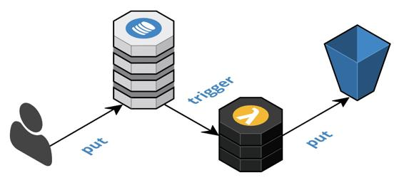

Example – cloud-native database trigger
This typical example demonstrates the basic building blocks that can enable multiple cloud-native databases within a component to collaborate asynchronously to create a cohesive persistence solution. As depicted in the following diagram, data is atomically put into a DynamoDB table (document store), this, in turn, triggers a function that will atomically store the data in an S3 bucket (blob storage), and this could trigger another function. This pattern can repeat as many times as necessary until the data within the component is consistent and then ultimately publish an event to downstream components, as we will discuss in the Event Sourcing pattern.

The following is a fragment of an AWS CloudFormation resource from a Serverless Framework serverless.yml file. In Chapter 6, Deployment, we will discuss how this fits into a continuous integration and deployment pipeline. What is important to note here is that provisioning cloud-native database resources are completely declarative and largely boilerplate and thus has a very low barrier to entry. Here we provide an AWS S3 bucket and an AWS DynamoDB table.
Resources:
Bucket:
Type: AWS::S3::Bucket
Properties:
BucketName: ${opt:stage}-${opt:region}-${self:service}-b1
Table:
Type: AWS::DynamoDB::Table
Properties:
TableName: ${opt:stage}-${self:service}-t1
AttributeDefinitions:
- AttributeName: id
AttributeType: S
KeySchema:
- AttributeName: id
KeyType: HASH
ProvisionedThroughput:
ReadCapacityUnits: 1
WriteCapacityUnits: 1
StreamSpecification:
StreamViewType: NEW_AND_OLD_IMAGES
Next, we have a JavaScript fragment that uses the AWS-SDK to put an item into DynamoDB. Let me first point out that while our objective is to eliminate synchronous inter-component communication, synchronous intra-component communication is expected. Sooner or later there has to be synchronous communication. Our goal is to limit these synchronous calls to just the interactions with the highly available cloud-native databases and the cloud-native event stream. To support atomic transactions, we also want to limit these interactions, in general, to a single write to a single data store within a single request or event context. A version 4 UUID is used for the item ID because it is based on a random number, which will help evenly distribute the data across shards and minimize the possibility of hot shards that decrease performance.
const item = {
id: uuid.v4(),
name: 'Cloud Native Development Patterns and Best Practices',
};
const params = {
TableName: process.env.TABLE_NAME,
Item: item,
};
const db = new aws.DynamoDB.DocumentClient();
return db.put(params).promise();
The following fragment from a Serverless Framework serverless.yml file demonstrates provisioning a function to be triggered by a cloud-native database, such as AWS DynamoDB, and shows that this is completely declarative and largely boilerplate as well:
functions:
trigger:
handler: handler.trigger
events:
- stream:
type: dynamodb
arn:
Fn::GetAtt:
- Table
- StreamArn
environment:
BUCKET_NAME:
Ref: Bucket
Next, we have an example of a trigger function itself. This example is kept very basic to demonstrate the basic building blocks. Here we put the object to an S3 bucket so that it could potentially be accessed directly from a CDN, such as CloudFront. Another option could be to put image files directly into S3 and then trigger a function that indexes the image file metadata in DynamoDB to allow for queries in a content management user interface. The possibilities for combining multiple cloud-native databases to achieve efficient, effective, highly available, and scalable solutions are plentiful. We will discuss many throughout all the cloud-native patterns.
export const trigger = (event, context, cb) => {
_(event.Records)
.flatMap(putObject)
.collect().toCallback(cb);
};
const putObject = (record) => {
const params = {
Bucket: process.env.BUCKET_NAME,
Key: `items/${record.dynamodb.Keys.id.S}`,
Body: JSON.stringify(record.dynamodb.NewImage),
};
const db = new aws.S3();
return _(db.putObject(params).promise());
};